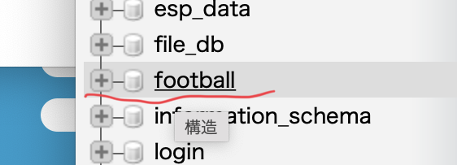
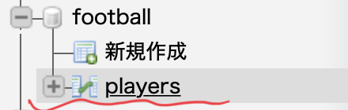

Hello!
・この記事によると、データベースとは決まった形式で
整理されたデータの集まりのことだと言われている。
・一方でテーブルとは、この記事でデータベースの種類
ごとの単位のことだと定義されている。
・まずはターミナルを開いてください。
・MAMPが格納されているところに移動するので、
下記のコードを入力してください。
cd /Applications/MAMP/Library/bin/
・mysqlコマンドを実行するので下記のコードと、
パスワードを入力してください。
※ 最初は全員rootだと思います。
./mysql -u root -p
・いよいよデータベースを作成します。
下記のコードを入力してください。
・今回はfootballデータベースを作成します。
create database football;

・phpadminをみてみると作成に成功しているのがわかります。
・テーブルはデータベースの中に作成するものなので、
まずはテーブルを作るデータベースを選択します。
use football;
・最後にテーブルを作成します。
・少し複雑ですが、次第に理解できるようになると思います。
・一行ずつエンターを押して入力してください。
create table players(
id int auto_increment primary key,
name varchar(20) not null
);

・phpadminをみてみると作成に成功しているのがわかります。
今回はターミナルを使っての作成でしたが、
phpadminを使った作成方法はこちら で載せています。
Fin.